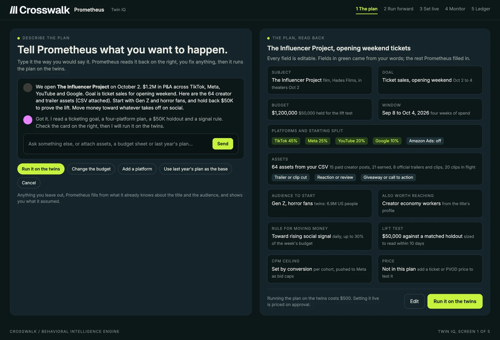
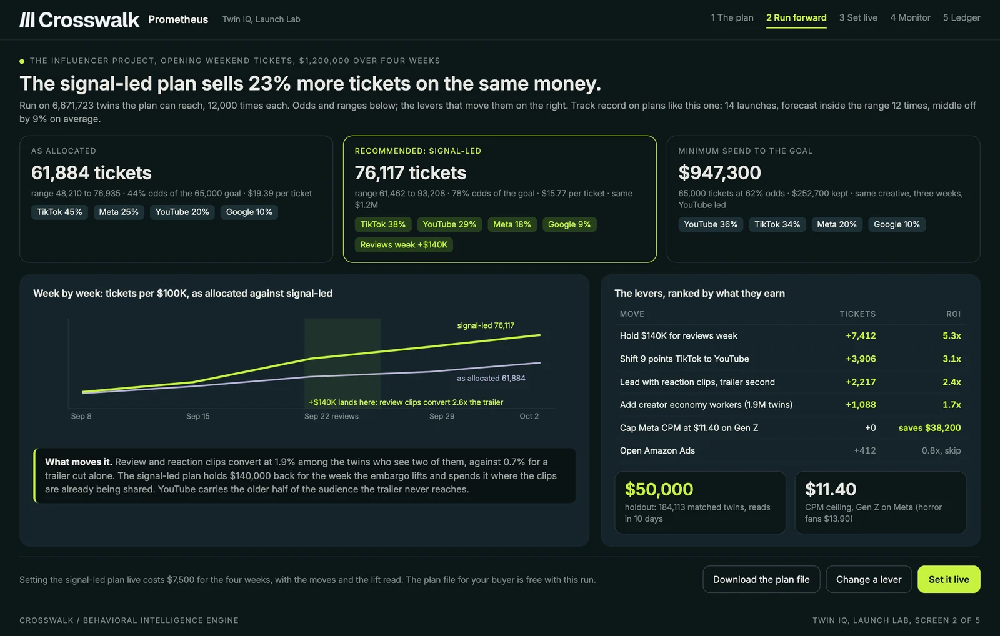
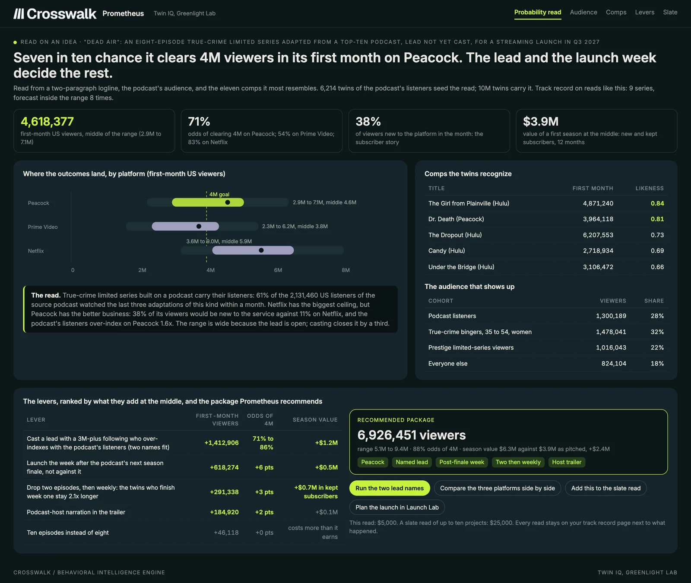
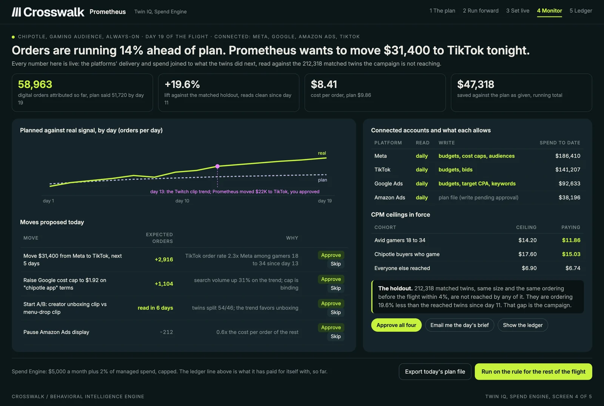

A digital twin is a working copy of a real person's behavior. Twin IQ builds one for each of the 10 million US people in the Crosswalk panel. It comes from what they watch, search, buy, and pay for, not from what they tell a survey. Put a plan, a title, a price, or an idea in front of the twins and see what happens before you spend.
Synthetic data, grounded in real behavior. Clients see group statistics only. No individual is ever identified.
Every person in the Crosswalk panel gets a twin built from what they do. You put in a plan, a title, or an idea. Prometheus runs it forward on the twins and returns the odds, the audience, and the package that earns the most. Then it sets the plan live inside the ad platforms and keeps score.
One twin per person: observed behavior, 4,600+ audiences already read, outside anchors, and what each person pays.
Twin and AI research tools raised more than $250 million in the past year. Every one of them is built on what people say, none on what they do.
The only panel that sees each person's whole digital life, joined to products that already read live campaigns.
Most synthetic data starts with a survey, or with a language model guessing how a type of person would answer. Crosswalk's digital twins start with the record: a real person's digital life over time, kept in order with timing. The twin learns how that person responds, what they pay, and when they leave. The synthetic part is what you do with it. Run a plan the person never saw and read how people like them respond.
Four layers of fact and two of judgment, for each of ten million people.
This person's watching, searching, buying, paying, and clicking, kept as a sequence with timing, across every surface.
Everything already read about people like them: 4,600+ audiences, every journey, every attribution, churn, and trend read.
Public facts the panel cannot see, fixed on as anchors: box office and streaming history, platform reach, ad benchmarks, prices paid.
Past responses to content and ads, how long each took, the prices this person paid, and the ones they walked away from.
Their standing with each title, platform, or brand: discovering, trying, in the habit, lapsing, or coming back.
How well twins like this one forecast the campaigns in the corpus, published next to every new read.
Put it in, run it forward, make it better, set it live and prove it.
A plan, a budget, assets, a trailer, a script, a logline, a creator roster, or a price, typed to Prometheus or attached as a file.
The twins the plan can reach respond the way people like them did before. Thousands of runs become odds and ranges.
Prometheus works every lever and ranks them by what they earn, then returns the package that reaches the goal for less money.
Approve it, and it runs inside the ad platforms, moves money toward rising signal, tests, and keeps the ledger of what it saved.

A plan run on the twins before the money goes out. For studios, streamers, labels, and game publishers with a release to open.
The signal-led plan sells 23% more opening-weekend tickets on the same budget, and the review clips lead instead of the trailer.

The odds on a title or a bare idea before money is committed. For development, acquisitions, financing, and slate decisions.
A seven in ten chance the limited series clears 4M viewers in its first month on Peacock, and the lead carries 71% of the reach.

The connected loop that moves money toward what is working. For brands, agencies, and partners with always-on paid media.
A $50,000 test on matched twins reads with the confidence of a seven-figure one, and the account moves budget the next morning.

Each one brings a decision that today gets made on a hunch, a survey, or last year's numbers.
P&A and launch teams opening a film, a season, an album, or a game. Launch Lab, per release.
Greenlight, acquisitions, and financing decisions. Greenlight Lab, per read or per slate.
Always-on paid social and search. Spend Engine, connected to the platforms they already buy.
Platforms and agencies that build on Crosswalk: reads at rate-card prices, with the savings ledger returned in the API.
Next to the others. Profile IQ tells you who the audience is. Digital Journey IQ shows the path they took. Attribution IQ gives each touchpoint its credit. Twin IQ takes the same people and runs the plan you have not spent on yet.
Survey-built twins and synthetic respondents are good at what people say. Spend decisions depend on what people do: whether they click, watch, pay, come back, or leave, and how long each takes. Crosswalk's twins were built from that record, and they are checked against live campaigns.
Before any client sees a forecast, the engine runs on the past. Every campaign and launch in the corpus is replayed from the day before it started, with only what was knowable then, and scored against the result. The score is published inside the product and updated as live campaigns land.
The engine's score on the past campaigns that look most like yours is on the page with the forecast.
The live signal comes in daily. The forecast is re-scored and the plan moves with it.
What was forecast, what happened, and what the twins saved go into a ledger you can open any time.
Each twin stands in for one of the 10 million US panelists who chose to be counted. Identity is kept apart from behavior, and sensitive details are removed before anything is stored. Prometheus never answers about one person. It answers about the group a person is counted with, and every projected figure carries its base.
A digital twin is a copy of a real person's behavior that can respond to something new. In research it stands in for a survey respondent. Crosswalk builds one from observed behavior over time for each of 10 million US people. A question about a plan or a title is answered by how people like that behave.
Synthetic data is data that was produced rather than observed. Crosswalk produces it by running a plan on twins built from real behavior. The inputs are real: what people watched, searched, bought, and paid. The output is new: what those same people would do with a plan they have not seen yet.
Most synthetic panels start from surveys, interviews, or a language model answering as a type of person. They can tell you what people say. Crosswalk's twins start from what people do, and they are checked against live campaigns rather than against another survey.
Every forecast is scored against what happened, and that score sits next to each new read inside the product. Before any client sees a forecast, the twins are run on past launches and campaigns using only what was knowable at the time.
A media plan and its budget split, a title, a script, a trailer, a bare idea, a creator roster, a price or a promotion, a release week, an audience. Anything you would otherwise spend money to find out.
Yes. The recommended plan exports in the shape each platform's buyer uploads from day one. Connected accounts on Meta, Google, Amazon, and TikTok add daily reads and, with your approval, the moves themselves.
No customer files are sold and no individual is identified. The panel is opted in, identity is kept apart from behavior, and clients receive group statistics projected to the US population.
Talk to us. Twin IQ opens to Crosswalk clients first, and Prometheus already answers audience questions on the same 10 million people today.
Bring a plan, a script, or a title. We will run it on the twins and walk you through the read. Prometheus answers audience questions on the same ten million people today.